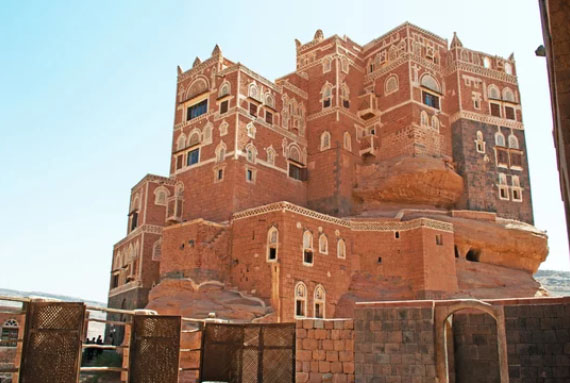
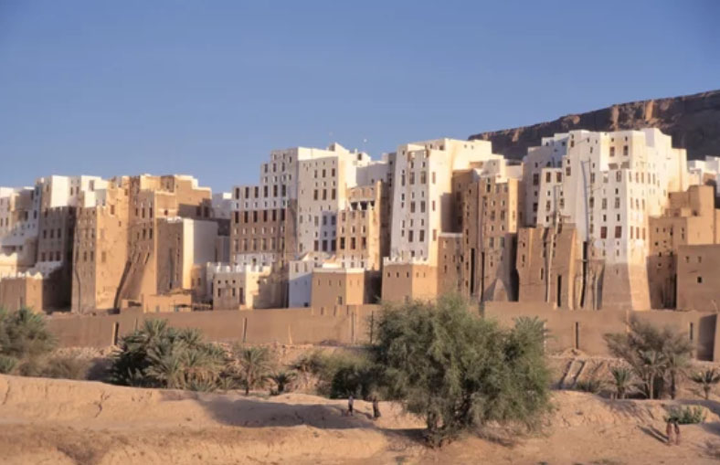
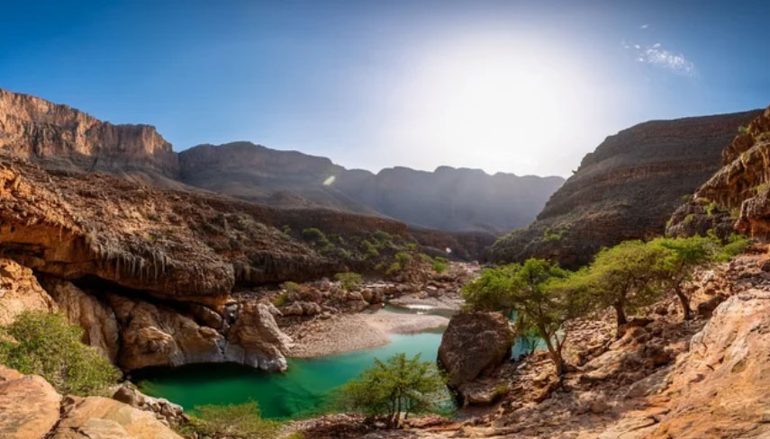

The Crossroads of Civilizations
Yemen: Embrace the Timeless Heritage
From the starlit dragon trees of Socotra to the soaring ancient skyscrapers of Shibam, witness a masterclass in human resilience where Himyarite traditions meet the timeless spirit of the Arabian mountains.
Historic Icons and Natural Wonders
Iconic Landmarks
From the ancient whispers of the sacred Dragon Blood tree to the soaring mud-brick heights of Shibam, witness the majestic soul of an eternal land in every horizon.

Great Mosque of Sana'a (Sana'a)
One of the oldest mosques in the Islamic world, dating back to the 7th century and renowned for its historical Qur'an manuscripts.

Dar al-Hajar (Wadi Dhahr)
A striking palace perched atop a massive rock in Wadi Dhar, once used as a summer residence by Yemen’s rulers.

Dragon's Blood Tre（Socotra Island）
Island An iconic umbrella-shaped tree unique to Socotra, famous for its red sap known as “dragon’s blood.
Where History and Nature Meet
Places
From the timeless whispers of historic souks to the vibrant pulse of futuristic metropolises, experience a visionary world where tradition meets luxury.

Sana'a
Yemen’s historic capital, famous for its centuries-old mud-brick tower houses and richly decorated windows.

Shibam
Often called the “Manhattan of the Desert,” this ancient city is known for its remarkable mud-brick skyscrapers.

Socotra
Located in the Emirate of Abu Dhabi, this UNESCO World Heritage city is known as the “Garden City.” Free from skyscrapers, it preserves traditional date palm groves sustained by the ancient falaj irrigation system and historic mud-brick forts. Far from the bustle of modern cities, it offers a glimpse into the traditions and history of the Bedouin.
A Heritage of Desert Gold
Oasis Flavors & Coastal Spices
Mandi
The crown jewel of Arabian hospitality: tender, spice-rubbed meat slow-roasted in a traditional pit, served over a bed of fragrant, smoky basmati rice.
Maraq
A comforting, aromatic lamb broth infused with traditional Hawaij spices and fresh herbs—the essential soul-warming start to every Yemeni meal.
Qishr
A uniquely spiced infusion brewed from coffee husks, blended with ginger and cinnamon for a light, fragrant, and digestive tea-like experience.
Bint al-Sahn
A majestic, multi-layered honey cake—delicate, flaky layers of buttery dough topped with nigella seeds and drizzled with pure Yemeni honey.
イエメン共和国の歴史
Republic of Yemen
As an ancient crossroads of civilizations, this is the cradle of the Queen of Sheba, where frankincense, coffee, and ancient skyscrapers rose from the heart of the incense route.
古代
サバア王国（紀元前8世紀頃 - 紀元前1世紀頃）
香料貿易で繁栄し、旧約聖書にも登場する「シバの女王」で知られています。高度な灌漑施設「マリブ・ダム」が有名です。
ヒムヤル王国 （紀元前2世紀頃 - 紀元後6世紀頃）
サバア王国を併合し、アラビア南部を支配。ユダヤ教やキリスト教の影響を受けた多様な文化が特徴です。
アクスム王国の支配 （6世紀）
エチオピアのアクスム王国が一時的にイエメンを支配しました。
サーサーン朝ペルシア（575年 - 7世紀）
サーサーン朝がアクスム王国を追い出し、イエメンを支配しました。
中世
イスラム帝国（正統カリフ時代・ウマイヤ朝・アッバース朝） （7世紀 - 9世紀）
イスラム教の拡大に伴い、イエメンはイスラム世界の一部となりました。
ザイド派イマーム政権 （9世紀 - 20世紀）
シーア派の一派であるザイド派がイエメン北部を中心に独立的な政権を築きました。
アイユーブ朝とマムルーク朝（12世紀 - 16世紀）
エジプトを拠点とするアイユーブ朝やマムルーク朝がイエメンを支配しました。
近世
オスマン帝国 （16世紀 - 19世紀）
紅海沿岸地域を中心に支配しましたが、山岳地帯ではザイド派イマームが自治を維持しました。
イギリスの影響（19世紀後半）
アデン港を占領し、南部を植民地化しました。
近現代・現代
イエメン王国（ムタワッキリヤ王国） （1918年 - 1962年）
オスマン帝国から独立したザイド派イマームが王国を樹立しました。
イエメン・アラブ共和国（北イエメン） （1962年 - 1990年）
1962年 - 軍事クーデター（イエメン革命）により、イエメン王国が崩壊。王制が廃止され、共和制が成立しました。
南イエメン人民共和国（のちのイエメン人民民主共和国） （1967年 - 1990年）
イギリスから独立し、社会主義国家として成立しました。
イエメン共和国 （1990年 - 現在）
北イエメンと南イエメンが統一され、現在のイエメン共和国が成立しました。しかし、内戦や政治的不安定が続いています。 イエメンは、古代から現代に至るまで、交易や宗教、政治の交差点として重要な役割を果たしてきました。